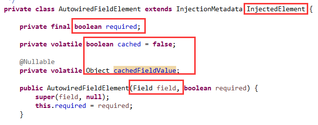
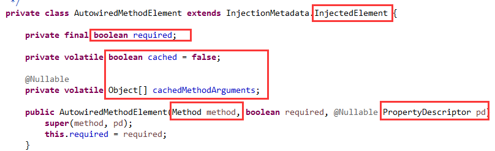
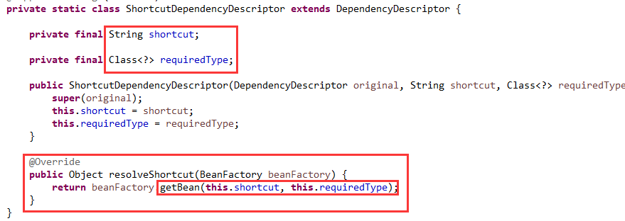
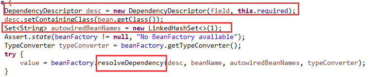
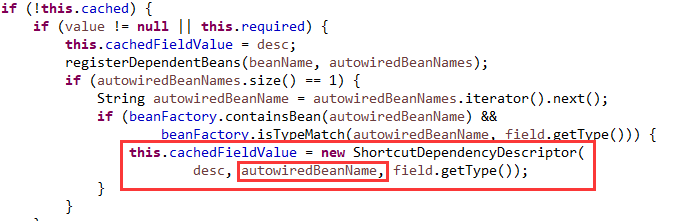
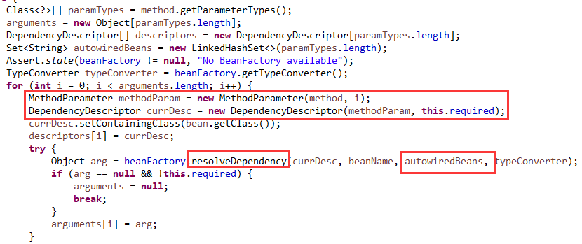
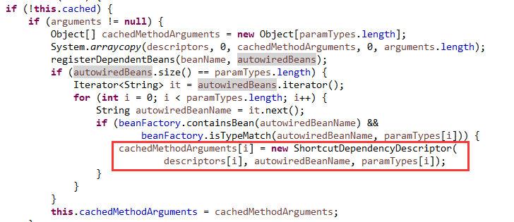
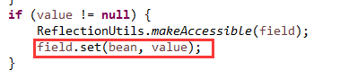
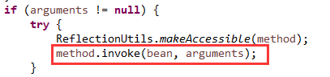

原文连接:https://www.cnblogs.com/lixinjie/p/taste-spring-015.html
在Spring中能够完成依赖注入的注解有JavaSE提供的@Resource注解，就是上一篇文章介绍的。
还有JavaEE提供的@javax.inject.Inject注解，这个用的很少，因为一般都不会去引用JavaEE的jar包。
编程新说注：JavaEE早已经被Oracle抛弃了。JavaEE这个名字已经成为历史。
还有两个就是@Value和@Autowired注解，这可是Spring自己的亲孩子。所以这两个使用的最多。
虽然注解不一样，但是目的一样，都是用来进行依赖注入，而且Spring处理依赖注入都是用的一个套路。
在上一篇文章中已经说的很详细了，这里再说一遍，就当巩固了。
从最通俗的角度来说，依赖注入就是这样的：
首先，要知道谁需要被注入。用A表示。
其次，要知道把谁注入。用B表示。
再者，从容器中找到它。用find(B)表示。
最后，完成注入动作。用<-表示。
因此，整个过程可以用一个式子表示：
A <- find(B)
Spring采用的统一方案如下：
1）找出一个类中需要被注入的元素，其实就是字段和方法，然后使用InjectedElement和InjectionMetadata来表示。
2）找出需要注入什么类型的对象，其实就是字段类型和方法参数类型，然后使用DependencyDescriptor来表示。
3）根据第2步的描述，从容器中找到（解析出）这个对象，这由容器负责，beanFactory.resolveDependency(..)。
4）完成具体注入动作，就是把第3步的值应用到第1步里，是字段的话就是设置一下，是方法的话就调用一下。
这是依赖主人的宏观过程，但是对不同的注解，有些细节性的东西是不同的。下面一起来看下。
被注入元素
如果被注入的是一个字段，如下图01：

表示字段的值是否必须被注入，还有缓存字段的值。
如果被注入的是一个方法，如下图02：

表示方法的参数值是否必须被注入，还有缓存方法的参数值。
编程新说注：这里缓存的字段值和方法参数值，并不是一个具体的值，只是一个依赖描述（DependencyDescriptor）。稍后会看到。
依赖的描述
Spring对@Autowired的处理是按类型进行的，所以必须按类型过滤容器中的所有bean，这样效率会低一些。
所以当过滤到这样的bean之后，就会缓存下bean的名称，下次就直接用这个bean名称去找，就会很快了。
这就涉及到对依赖描述的扩展，如下图03：

这里把bean的名称和类型都记录下来，下次直接进行短路操作，使用getBean(..)，不用再遍历了。
从容器中解析出依赖
对字段来说，如下图04：

使用Field生成一个依赖描述，然后去容器中解析出能够和字段类型兼容的所有bean，并把bean名称放入autowiredBeanNames这个Set中去。
然后进行缓存，如下图05：

主要缓存了bean名称，在下次再装配时，进行短路操作。
对于方法来说，如下图06：

由于方法有多个参数，每个参数都需要依赖，所以就按参数逐个处理。
使用Method和参数索引生成一个MethodParameter，然后再用它生成依赖描述。
然后去容器中解析出能够和该方法参数类型兼容的所有bean，并把bean名称放入autowiredBeans这个Set中去。
然后再进行缓存，如下图07：

依赖的注入
对于字段，调用set方法，如下图08：

对于方法，调用invoke方法，如下图09：

以上就是具体的处理过程和对通用处理的扩展。
这里面似乎有一个问题，就是对@Autowired的处理和@Value的处理应该是不太相同的，但是上述过程中并没有体现。
这一部分其实是交给了容器去处理了，在beanFactory.resolveDependency(..)这个解析依赖的方法里进行了处理。
对构造方法的处理
构造方法是很特殊的，在容器准备实例化一个bean时，就会去找出一个最合适的构造方法，然后通过反射调用它来生成一个对象。
如果一个类定义了多个构造方法，Spring会通过一个复杂方式从中选出一个最合适的。
由于@Autowired注解可以作用于构造方法上，所以可以用它来适当改变Spring的这种选择方式。
把@Autowired注解标到其中几个构造方法上，这样Spring只会在这些标注解的之间进行选择，相当于起一个收窄作用。
此时还会把默认无参的构造方法也作为备选，因为标注解的都不能满足的话，就只能使用默认的。
如果一个类有多个构造方法，但我们想非常明确的使用某一个，那就把@Autowired标在它上，并把注解的required属性设置为true。
这样只会把这一个选出来，此时不会再考虑默认无参的构造方法。相当于起一个特指作用。
编程新说注：这个特指作用的用法和上面那个收窄作用的用法不能混合使用，只能二选一，否则报错。
这就是@Autowired注解对构造方法的作用。
和bean后处理器的结合
构造方法的处理逻辑是在determineCandidateConstructors这个方法里调用的，目的是给我们一个决定构造方法的机会，如果决定不出来也不要紧，Spring还会自己决定。
剩下的就和之前的一样了，在postProcessMergedBeanDefinition方法里准备好和依赖注入相关的元数据。
在postProcessProperties方法里，根据元数据从容器中解析出依赖并完成注入动作。
>>> 品Spring系列文章 <<<
品Spring：SpringBoot和Spring到底有没有本质的不同？
品Spring：SpringBoot轻松取胜bean定义注册的“第一阶段”
品Spring：SpringBoot发起bean定义注册的“二次攻坚战”
品Spring：注解之王@Configuration和它的一众“小弟们”
品Spring：对@PostConstruct和@PreDestroy注解的处理方法
>>> 热门文章集锦 <<<
爸爸又给Spring MVC生了个弟弟叫Spring WebFlux
【面试】吃透了这些Redis知识点，面试官一定觉得你很NB（干货 | 建议珍藏）
【面试】如果你这样回答“什么是线程安全”，面试官都会对你刮目相看（建议珍藏）
【面试】迄今为止把同步/异步/阻塞/非阻塞/BIO/NIO/AIO讲的这么清楚的好文章（快快珍藏）
【面试】一篇文章帮你彻底搞清楚“I/O多路复用”和“异步I/O”的前世今生（深度好文，建议珍藏）
作者是工作超过10年的码农，现在任架构师。喜欢研究技术，崇尚简单快乐。追求以通俗易懂的语言解说技术，希望所有的读者都能看懂并记住。下面是公众号和知识星球的二维码，欢迎关注！